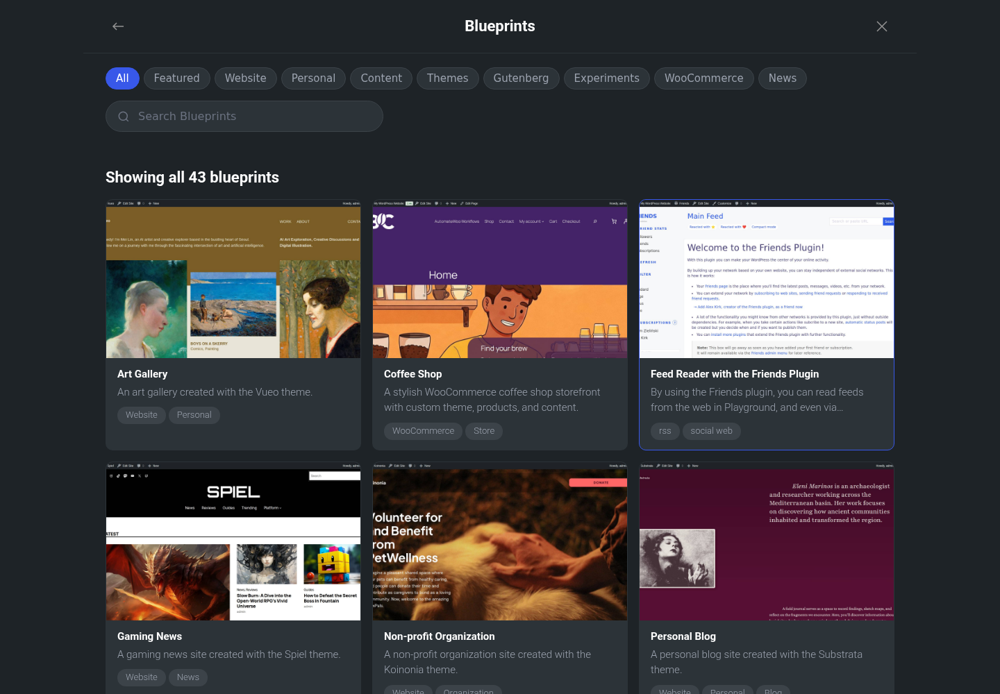
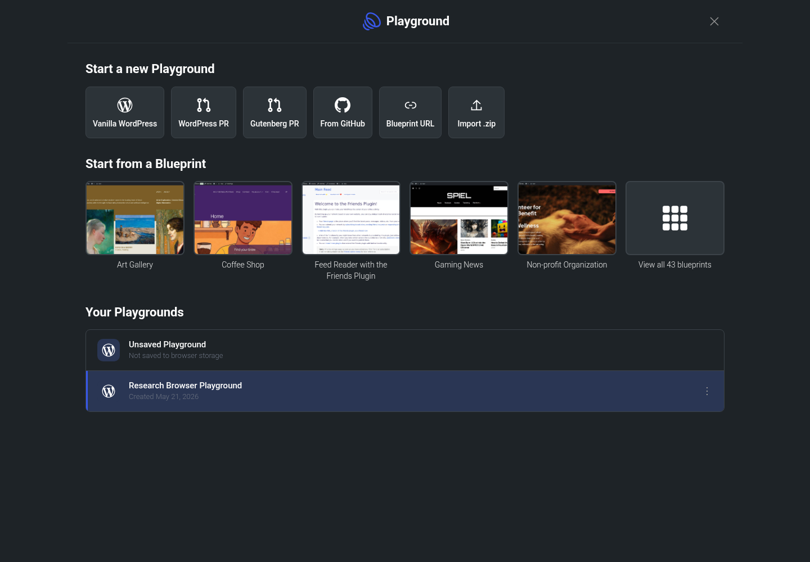
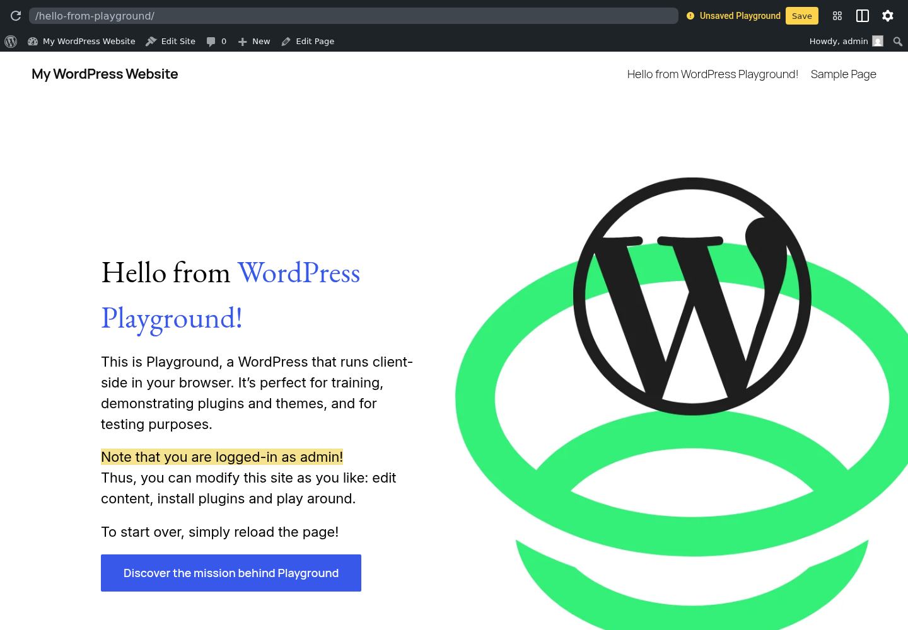

Session is temporary
Save in browser storage or to a local directory before refreshing this client review.
Example save state: 3028 / 3751 files copied
Site Manager
Logged in as admin. Stored Playgrounds keep limited runtime settings.
Save in browser storage or to a local directory before refreshing this client review.
WordPress latest, PHP 8.3, English (United States), single-site install.
Export this working copy to GitHub or download a .zip package for handoff.
<?php define( 'CONCATENATE_SCRIPTS', false );
/** Database settings */
define( 'DB_NAME', 'database_name_here' );
define( 'DB_USER', 'username_here' );
define( 'DB_PASSWORD', 'password_here' );
define( 'DB_HOST', 'localhost' );{
"$schema": "https://playground.wordpress.net/blueprint-schema.json",
"meta": { "title": "Playground Welcome Page" },
"login": true,
"landingPage": "/hello-from-playground/",
"preferredVersions": { "php": "8.3", "wp": "latest" }
}WordPress Playground emulates MySQL using SQLite. Database tools are improving weekly.
No error logs so far.
WP_DEBUG log is empty.
No PHP warnings captured.
Start flow
Start a clean WordPress Playground immediately with the current runtime defaults.
Blueprints

Art GalleryAn art gallery created with the Vueo theme.
WebsitePersonal
Coffee ShopA WooCommerce storefront with custom products and content.
WooCommerceStore Feed Reader with Friends
Feed Reader with FriendsRead feeds from the web in Playground.
rsssocial web
Gaming NewsA gaming news site created with the Spiel theme.
WebsiteNews